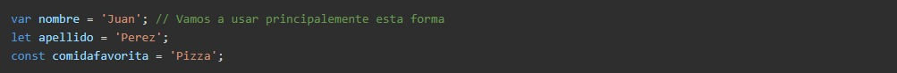
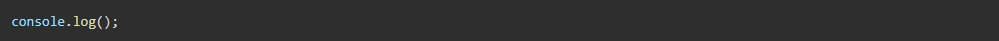
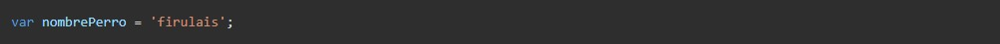
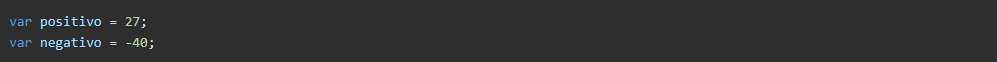
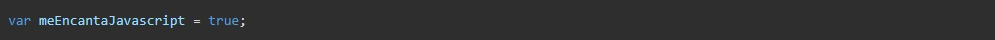

Java Script
es un lenguaje de programacion que fue creado originalmente para ser usado en el front-end de una pagina web. la idea original era poder dar dinamismo a las paginas webs, que en un principio eran estaticas. la introduccion del "motor v8" de google ha mejorado la velocidad y el funcionamiento de JS. haciendo que JS (java script) sea la lengua franca de la web, llegando inclusive al black-end a traves de nodejs.
Posted by
Gonzalo Exequiel Medina
variables
una variable es una forma de almacenar el valor de algo para usar mas tarde. (una nota para aquellos con conocimientos previos de programacion: JavaScript es un lenguaje de tipado dinamico , una variable se puede configurar (y restablecer) a cualquier tipo, no nececitamos declarar su tipo al iniciar la variable).
para crear una variable en Java Script utilizamos la palabra clave var, seguida de un espacio y el nombre de la variable (con este nombre podemos hacer referencia a ella luego). ademas de declarar una variable, podemos asignarle un valor usando signo =.
formas de declarar una variable:
var
es la forma de declarar una variable ES5 (ES5 es la version de JS, hoy en dia existe ES6 que es la nueva version, pero todavia no es la mas usada.) esta es una palabra clave para "variable"
let
es una nueva palabra clave de ES6, esto asignara una variable muy similar a var, pero con un comportamiento un poco diferente. lo mas notable es que difiere al crear un "nivel de scope" (hablaremos de esto mas adelante).
const
tambien es nuevo en ES6. un const es una variable que no se podra cambiar. esto es la abreviatura de "constante"

Posted by
Gonzalo Exequiel Medina
console.log
este metodo muy simple nos permitira inprimir en la consola todo lo que poongamos entre parentesis

Posted by
Gonzalo Exequiel Medina
Tipos De Datos
en ciencias de la computacion, un tipo de dato informatico o simplemente tipo, es un atributo de los datos que indica la clase de datos que se va a manejar. esto incluye inponer restricciones en los datos, como que valores pueden tomar y que operaciones se pueden relizar.
los tipos de datos aceptados varian de lenguaje en lenguaje.
los tipos de datos mas basicos en JavaScript son Strings, Numbers, and Booleans.
Strings
las "Strings" son bloques de texto, siempre se definiran entre comillas, ya sea simple o doble. Cualquier texto entre comillas es una cadena o string.

Numbers
los numeros son solo eson numeros. Los numeros no se envuelven en comillas, pueden ser negativos tambien. JavaScript tiene una limitacion en el tamaño de un numero, pero muy raramente aparecera esa limitacion en nuestro uso diario.

boolean
los booleanos provienen de la logica de boole. Es un concepto qye alimenta el codigo binario y el nucleo de las computadoras. Es posible que haya visto codigo binario en el pasado, esto es logica booleana. Esencialmente significa que tiene dos opciones, activar o desactivar, 0 o 1, verdadero o falso. En JavasCript usamos booleanos para significar verdadero o falso. esto puede parecer simple al principio, pero puede complcarse mas adelante.

Posted by
Gonzalo Exequiel Medina